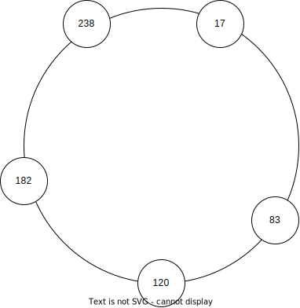
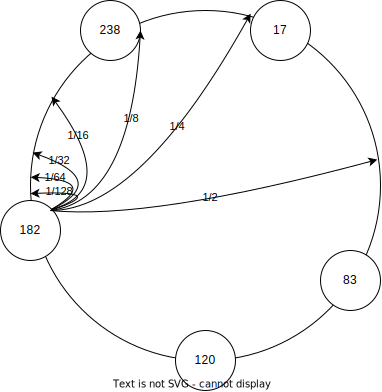
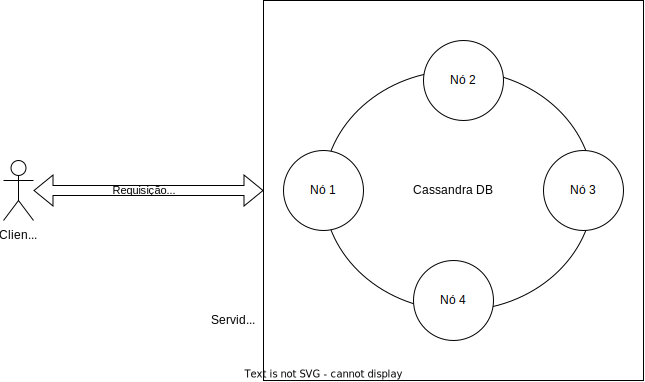
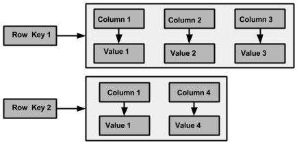

Estudos de Caso
Sistema P2P: Chord
Chord é uma sistema P2P de múltiplas aplicações desenvolvido pelos membros do CSAIL, do MIT, e publicado em 2001. Desde então, inspirou diversos outros sistemas, tornando-se sinônimo com P2P. Neste sistema, nós organizam-se em um anel lógico e cada um torna-se responsável por um dos segmentos do anel adjacente a onde se encontra no mesmo. Requisições para correspondentes a um segmento são roteados para o nó responsável usando uma tabela de rotas conhecida como finger table. Se traçarmos os caminhos apontados por esta tabela sobre o anel, desenharemos cordas sobre o mesmo, o que explica o nome do sistema.

Identificação
No Chord o problema da identificação dos dados é resolvido usando-se chaves de \(m\) bits, geradas por meio de uma função hash criptográfica a partir de chaves que faça sentido para a aplicação, por exemplo nome, telefone, ou CPF. Como a função hash é criptográfica, uma pequena variação na entrada implica em grande variação na saída e, para quem observa apenas a saída da função, uma sequência de chaves é indistinguível de uma sequência aleatória.
Divisão de carga
A cada nó é atribuído um identificador único de \(m\) bits, gerado aleatoriamente. Como \(m\) normalmente é grande, com mais de uma centena de bits, a probabilidade de dois nós terem o mesmo identificar é desprezível. Além disso, os nós se organizam em uma rede sobreposta estruturada na forma de um anel lógico, em que os nós aparecem ordenadamente de acordo com seus identificadores. A figura a seguir mostra um anel em cujo os nós tem identificadores de 8 bits (0 a 255), com cinco nós.1 Assumamos inicialmente que os nós só estão cientes dos seus vizinhos imediatos no anel.

Cada chave é associada a um nó, responsável por atender requisições de criação, consulta, modificação e remoção dos dados relacionados àquela chave. A pseudo aleatoriedade na geração da chave e a aleatoriedade na geração dos identificadores de nós faz com que a distribuição de carga entre os nós seja uniforme. O dado com chave \(k\) é responsabilidade do nó com menor identificador \(i \geq k\), aka, sucessor de \(k\) (\(i = suc(k)\)), no anel. Na figura a seguir, é apresentado junto a cada nó as chaves pelas quais o nó é responsável.

Roteamento
Suponha que um cliente solicite ao Chord do exemplo anterior que armazene o valor \(v\) associado à chave \(k\). A solicitação é feita pelo contato a um dos nós no sistema, que pode ou não ser o responsável por \(k\). Caso seja o responsável, a solicitação é executada localmente e uma resposta devolvida ao cliente. Caso contrário, a requisição deve repassada ou roteada para o nó correto.
Na rede estruturada definida até agora, uma opção óbvia é repassar a requisição para um dos vizinhos e assim sucessivamente até que alcance o nó correto. Esta solução, correta, tem custo da ordem do número de nós no sistema, \(O(n)\). Em uma instância com milhares de nós, \(O(n)\) é um custo muito alto, ainda mais se considerarmos que cada salto na rede sobreposta potencialmente cruza toda a Internet, uma vez que, reforçando, a proximidade na rede sobreposta não implica em proximidade na rede física abaixo. Observe que o custo em termos de espaço para se implementar esta solução é \(O(1)\) para cada nó do sistema. Em outras palavras, cada nó mantem uma tabela de rotas com uma ou duas entradas, apontando para seus vizinhos.
Com uma rede com milhares de nós, uma solução \(O(n)\) saltos, onde cada pode levar ao outro lado do planeta, operações teriam uma latência muito alta. Para amenizar o custo, Chord propõe a criação de uma tabela de rotas, também conhecida como finger-table, que aponta para nós no anel com distâncias que se dobram a cada entrada.

A finger-table é construída da seguinte forma, onde \(m\) é a quantidade de bits usados para identificar nós no sistema:
- seja \(F_p\) a finger-table do processo \(p\);
- seja \(F_p[i]\) a \(i\)-ésima da tabela; e,
- \(F_p[i] = suc(p+2^{i-1})\).
Observe que nesta tabela, a \(i\)-ésima entrada aponta para o processo que no que sucede \(p\) pelo menos \(2^{i-1}\), e que esta distância de sucessão aumenta exponencialmente. Observe também que a maior distância é proporcional a metade do tamanho do anel. Isto quer dizer que o último finger da tabela proporciona um salto de \(1/2\) anel, o penúltimo \(1/4\) do anel, o ante-penúltimo \(1/8\), e assim sucessivamente. Outra forma de se ver esta tabela é como proporcionando um salto de pelo menos metade da distância restante para o nó responsável pela chave, resultando em um roteamento com custo \(O(log n)\).
Mas como este potencial é explorado? Usando-se o seguinte algoritmo de busca pela entrada correta na tabela de roteamento, do ponto de vista do processo \(p\):
- seja \(k\) a chave para qual estamos procurando o sucessor;
- itere pela tabela até achar a primeira entrada cujo valor, i.e., o identificador de um nó, é maior que \(k\);
- se a entrada é a primeira da tabela, então encaminhe a requisição para o nó apontado, pois ele é o sucessor de \(k\), até onde \(p\) consegue determinar;
- senão, encaminhe a requisição para a entrada anterior, pois o nó referenciado está mais próximo do sucessor para determiná-lo com segurança.
Considere no exemplo a seguir a busca pelo sucessor de 26, iniciada pelo nó 1.

Duas observações são importantes aqui. A primeira, é que as comparações para se encontrar a entrada correta, deve respeitar o anel, por exemplo, em um anel com 32 posições, por exemplo, \(31 < 0\). No seguinte exemplo, considere por exemplo a busca que o nó 21 faz pelo sucessor de 31; qual deve ser a entrada selecionada?
A segunda observação é que não se pode encaminhar a requisição diretamente para o nó apontado na entrada encontrada, pois a visão de \(p\) pode ser incompleta para partes distantes do anel. Tente identificar exemplos no anel a seguir onde este comportamento seria errado.
A organização dos nós em um anel virtual e a distribuição da responsabilidade dos dados pelo particionamento do espaço das chaves de forma correspondente às faixas no anel lógico é a técnica conhecida como espalhamento consistente, do inglês, consistent hashing.
Churn
Apesar do espalhamento consistente ser uma técnica muito útil, ela não resolve todos os problemas. Aliás, vários outros problemas precisam ser resolvidos, sendo o primeiro deles lidar com a entrada e saída de nós, principalmente por falhas de nós e comunicação.
Quando um novo nó entra do sistema, ele precisa seguir os seguintes passos:
- Escolher um novo Identificador \(I\)
- Identificar o sucessor \(S\) de \(I\)
- Identificar o antecessor \(A\) de \(I\)
- Informar \(A\) e \(S\) de sua entrada, para que ajustem suas tabelas de rota.
- \(A\) e \(S\) propagam a informação da entrada de \(I\) para seus vizinhos, permitindo que ajustem suas tabelas de rota.
Além disto, a reorganização dos nós exige movimentação de dados, pois parte dos dados armazenados em \(S\), com chaves menores que \(I\), precisam ser copiadas para \(I\), o novo responsável. As principais questões a serem respondidas durante a movimentação dos dados são
- como manter os dados disponíveis para inserção e consulta durante todo o processo, e
- como minimizar o impacto da reorganização nos nós vizinhos ao novo nó
Quanto à primeira questão, pode-se rotear as requisições para os dois nós responsáveis, o atual e o novo, e combinar as respostas, mantendo os dados mais recentes. Quanto à segunda, uma opção é fazer com que cada novo nó assuma diversas posições no anel, com identificadores distintos, passando a "incomodar" múltiplos processos, mas de forma mais suave.
Embora se possa "facilmente" resolver os problemas da entrada de nós, os da saída são mais complexos, principalmente porquê a saída acontece geralmente bruscamente, por exemplo por falhas no sistema. Quanto à reorganização das tabelas de rota, cada nó precisa monitorar os nós que figuram em sua tabela e, caso pareçam indisponíveis, ajustar par apontar para outro nó. Contudo, caso a suspeita seja indevida, isto pode levar a dados serem consultados e armazenados nos nós errados. Também com relação aos dados, há o problema de não perdê-los quando o nó responsável se torna indisponível. O tratamento destes problemas está relacionado e é feito pelo replicação dos dados em múltiplos nós. Isto é feito no Chord, por exemplo, da seguinte forma:
- para cada dado, com chave \(k\), há \(r\) cópias;
- a primeira cópia é mantida no sucessor de \(k\);
- a segunda cópia, no sucessor do sucessor de \(k\), e assim por diante;
- cada escrita é feita na primeira cópia, respondida, e replicada para as demais cópias;
- cada leitura é feita na cópia com menor identificador.
No caso de falha de uma cópia, há \(r-1\) cópias ainda disponíveis para responder à requisição, mantendo o sistema disponível a despeito de (\(r-1\)) falhas, no que se chama de degradação graciosa. Há contudo, um problema introduzido por esta abordagem. Assuma a seguinte sequência de passos, em um sistema com \(r=2\).
- escrita na cópia 1;
- resposta ao cliente;
- replicação para cópia 2;
- escrita na cópia 1;
- resposta ao cliente;
- falha da cópia 1;
- leitura na cópia 2.
O cliente, ao ler o dado, lê uma versão antiga do mesmo, inconsistente com a visão que tinha do sistema. De fato, este tipo de sistema é chamado de eventualmente consistente pois somente na ausência de falhas e de escritas as diversas réplicas serão consistentes umas com as outras. Continuemos a sequência:
- escrita na cópia 2;
- cópia 1 volta a funcionar;
- leitura na cópia 1.
Neste caso, a cópia "secundária" 2 tem um dado mais atual, que precisa ser repassado para a cópia 1; este movimento de convergência de dados é conhecido como anti-entropia. Finalmente, continuemos a sequência:
- escrita na cópia 1, por outro cliente.
Assim, ambas as cópias, 1 e 2, tem dados derivados da primeira escrita, mas feitos "concorrentemente", um conflito. Qual dos dois é o correto neste contexto? É impossível apresentar uma estratégia genérica para resolver esta situação, mas alguns sistemas usarão uma estratégia do tipo "a última escrita vence", onde a última escrita pode ser determinada em por relógios lógicos, vetoriais, tempo, e uma pitada de "arranjo técnico" para quebrar empates. O Dynamo, que veremos a seguir, é um destes sistemas.
Espalhamento Consistente
- Carga uniforme entre nós.
- Todos os nós sabem como rotear requisições
- Número de saltos médio é conhecido.
- O sistema se adapta a entrada e saída de nós, por falhas ou não.
Sistema P2P: DynamoDB
DynamoDB é o marco fundamental dos bancos de dados NoSQL. No vídeo a seguir um de seus evangelizadores, descreve rapidamente o banco, os cenários em que deveria ser usado e diversos padrões de projeto para modelagem de dados.
Enquanto o assiste, alguns pontos devem ser ressaltados sobre o Dynamo de forma específica e os NoSQL de forma geral:
- surgiram da necessidade de escalabilidade dos bancos de dados, isto é, da necessidade de lidar com milhões e milhões de entradas de dados, gerados e processados com baixa latência e alta vazão, a despeito de falhas;
- maior escalabilidade implica em maior exposição a particionamentos da rede em que o sistema roda, que associado à necessidade de manutenção de alta disponibilidade, implica em perda de garantias de consistência (veremos o Teorema CAP adiante);
- Partition keys são as chaves usadas para roteamento dos dados, ou seja, as chaves discutidas anteriormente neste capítulo sobre sistema P2P;
- Sort keys são chaves usadas dentro de cada nó para ordenar os dados na hora de gerar as SSTables (String Sorted Tables), e se usadas em agregados de valores, são equivalentes ao GROUP BY do SQL;
- Lambda functions são funções para processamento de dados executadas em entradas definidas por um pipeline de processamento sem a definição explícita de sockets e portas, em um modelo conhecido como Serverless.
Este modelo é adequado a algumas aplicações, como o carrinho de compras da Amazon.com, aplicação para a qual o Dynamodb foi inicialmente desenvolvido. Nesta aplicação, cada usuário tem um identificador único, recuperado no momento em que se loga ao sistema da Amazon. Este identificador único é a chave de particionamento e os dados são o conteúdo do carrinho de compras.
Para lidar com falhas, o conteúdo do carrinho é replicado nos nós sucessivos ao responsável pela dupla chave valor. O carrinho é modificado atomicamente, isto é, sobrescrito por inteiro. A replicação, associada às modificações atômicas, potencializa conflitos, que são identificados comparando-se os vetores de versão (relógios vetoriais) associados a cada valor escrito. No caso de conflitos, as múltiplas cópias concorrentes são apresentadas ao usuário na forma de um carrinho de compras com a união dos itens nos respectivos carrinhos, de forma que o usuário possa corrigí-lo. Na pior das hipóteses, uma compra com erros será feita, e necessitará de uma atividade compensatória para o usuário, como um brinde.
Na prática, muitos sistemas mantém os papéis de clientes, que requisitam a execução de serviços, e servidores, que executam as requisições, mas distribuem as tarefas dos servidores entre pares para aquela função, sendo efetivamente sistemas híbridos. Este é o caso dos bancos de dados NOSQL, como o Dynamo, que acabamos de estudar, e também do Cassandra, que veremos a seguir.

Sistema P2P: Cassandra
Outra alternativa é fazer com que cada nó do sistema conheça todos os outros. Assim, cada requisição pode ser diretamente encaminhada ao nó responsável por tratá-la. O custo do roteamento, neste caso, é \(O(1)\), muito mais rápido que na abordagem anterior. O custo de armazenamento da tabela de rotas é, contudo, \(O(n)\), o que pode ser proibitivo em uma rede com milhares de nós, apesar de ser uma solução viável em redes menores. Este é o caso do CassandraDB, uma banco de dados distribuído baseado no Chord, que estudaremos melhor mais adiante, considerado uma DHT de salto único (single-hop DHT).
O CassandraDB foi, sem sombra de dúvida, influenciado pelo projeto do DynamoDB, o que é facilmente explicável já que um dos criadores do Dynamo foi o arquiteto do Cassandra.
Mas em vez de uma cópia, o Cassandra largamente expande a funcionalidade do Dynamo ao se inspirar no banco de dados BigTable, do Google.
Com isso, o Cassandra se aproxima do modelo relacional, facilitando o desenvolvimento de certas aplicações, sem perder as características desejáveis das DHT.
A principal característica neste sentido é o modelo híbrido chave-valor/relacional, em que os valores associados a uma chave são divididos em colunas.
A combinação chave-colunas são denominadas column-families e seu conjunto keyspace. Estas duas estruturas são equivalente às tabelas/relações e aos bancos de dados, dos bancos de dados relacionais.

Uma diferença fundamental entre column-families e relações é que as últimas precisam de um esquema pré-definido, enquanto que as primeiras não tem um esquema. Isto quer dizer que novas colunas podem ser adicionadas dinamicamente e que nem todas precisam estar presentes para cada chave. De fato, múltiplos registros com a mesma chave, ou linhas, podem ter conjuntos de colunas diferentes.

Para que o correto conjunto de colunas associado a uma chave possa ser apurado, após múltiplas escritas com a mesma chave tenham ocorrido, a cada tupla (chave,coluna,valor) é associado também um timestamp.
 .
.
Assim, dados uma mesma chave e coluna, o valor válido é o com o maior timestamp.
Devido a possibilidade de valores serem escritos para diferentes colunas independentemente, valores válidos e inválidos podem ter o mesmo timestamp.
Por exemplo, considere os seguintes dados escritos no banco:
| Chave | Coluna\(\rightarrow\)Valor | Timestamp |
|---|---|---|
| 3 | Nome\(\rightarrow\)José, Idade\(\rightarrow\)30 | 02:02:2020,13:45:00 |
| 3 | Idade\(\rightarrow\)33 | 02:02:2020,13:50:00 |
| 3 | Telefone\(\rightarrow\)333444554433 | 02:02:2020,13:55:00 |
Uma busca pelos dados associados à chave 3 retornará o seguinte resultado: Nome\(\rightarrow\)José, Idade\(\rightarrow\)33, Telefone\(\rightarrow\)333444554433.
Para facilitar mais ainda o desenvolvimento, o Cassandra conta com uma linguagem de consulta similar ao SQL (Structured Query Language), a CQL (Cassandra Query Language).
Assim, a consulta a estes dados seria mais ou menos como SELECT * FROM dados WHERE key == 3.2
Há muitos recursos online para se aprender mais se aprender mais sobre como usar o Cassandra, por exemplo, aqui. Há também diversos projetos de código livre que o usam e podem ser estudados, por exemplo, o clone de Twiter Twissandra. Mas embora o uso de sistemas gerenciadores de bancos de dados em sistemas distribuídos seja interessante, aqui nos focaremos em alguns dos aspectos de como estes SGBD são construídos.
Detalhes de Implementação
A seção de tecnologias descreve várias estruturas de dados recorrentemente usadas em implementação de bancos de dados como o Cassandra.
Estudos de Caso
RPC: gRPC
gRPC é um framework para invocação remota de procedimentos multi-linguagem e sistema operacional, usando internamente pelo Google há vários anos para implementar sua arquitetura de micro-serviços. Inicialmente desenvolvido pelo Google, o gRPC é hoje de código livre encubado pela Cloud Native Computing Foundation.
O sítio gRPC.io documenta muito bem o gRPC, inclusive os princípios que nortearam seu projeto.
O seu uso segue, em linhas gerais, o modelo discutido nas seções anteriores, isto é, inicia-se pela definição de estruturas de dados e serviços, "compila-se" a definição para gerar stubs na linguagem desejada, e compila-se os stubs juntamente com os códigos cliente e servidor para gerar os binários correspondentes. Vejamos a seguir um tutorial passo a passo, em Java, baseado no quickstart guide.
Instalação
Os procedimentos de instalação dependem da linguagem em que pretende usar o gRPC, tanto para cliente quanto para servidor. No caso do Java, não há instalação propriamente dita.
Exemplo Java
Observe que o repositório base apontado no tutorial serve de exemplo para diversas linguagens e diversos serviços, então sua estrutura é meio complicada. Nós nos focaremos aqui no exemplo mais simples, uma espécie de "hello word" do RPC.
Pegando o código
Para usar os exemplos, você precisa clonar o repositório com o tutorial, usando o comando a seguir.
1 | |
Uma vez clonado, entre na pasta de exemplo do Java e certifique-se que está na versão 1.33, usada neste tutorial.
1 2 | |
Compilando e executando
O projeto usa gradle para gerenciar as dependências. Para, use o wrapper do gradle como se segue.
1 2 | |
Caso esteja na UFU, coloque também informação sobre o proxy no comando.
1 | |
Como quando usamos sockets diretamente, para usar o serviço definido neste exemplo, primeiros temos que executar o servidor.
1 | |
Agora, em um terminal distinto e a partir da mesma localização, execute o cliente, quantas vezes quiser.
1 | |
O serviço
O exemplo não é muito excitante, pois tudo o que o serviço faz é enviar uma saudação aos clientes.
O serviço é definido no seguinte arquivo .proto, localizado em ./src/main/proto/helloworld.proto.
1 2 3 4 5 6 7 8 9 10 11 12 13 | |
No arquivo, inicialmente são definidas duas mensagens, usadas como requisição (cliente para servidor) e outra como resposta (servidor para cliente) do serviço definido em seguida.
A mensagem HelloRequest tem apenas um campo denominado name, do tipo string. Esta mensagem conterá o nome do cliente, usado na resposta gerada pelo servidor.
A mensagem HelloReply também tem um campo do tipo string, denominado message, que conterá a resposta do servidor.
O serviço disponível é definido pela palavra chave servicee de nome Greeter; é importante entender que este nome será usado em todo o código gerado pelo compilador gRPC e que se for mudado, todas as referências ao código gerado devem ser atualizadas.
O serviço possui apenas uma operação, SayHello, que recebe como entrada uma mensagem HelloRequest e gera como resposta uma mensagem HelloReply.
Caso a operação precisasse de mais do que o conteúdo de name para executar, a mensagem HelloRequest deveria ser estendida, pois não há passar mais de uma mensagem para a operação.
Por outro lado, embora seja possível passar zero mensagens, esta não é uma prática recomendada.
Isto porquê caso o serviço precisasse ser modificado no futuro, embora seja possível estender uma mensagem, não é possível modificar a assinatura do serviço.
Assim, caso não haja a necessidade de se passar qualquer informação para a operação, recomenda-se que seja usada uma mensagem de entrada vazia, que poderia ser estendida no futuro.
O mesmo se aplica ao resultado da operação.
Observe também que embora o serviço de exemplo tenha apenas uma operação, poderia ter múltiplas.
Por exemplo, para definir uma versão em português da operação SayHello, podemos fazer da seguinte forma.
1 2 3 4 5 6 7 8 9 10 11 12 13 14 15 16 17 18 19 20 21 | |
Observe que a nova operação recebe como entrada mensagens OlaRequest e OlaReply, que tem definições exatamente iguais a HellorRequest e HelloReply.
Logo, em vez de definir novas mensagens, poderíamos ter usado as já definidas. Novamente, esta não é uma boa prática, pois caso fosse necessário evoluir uma das operações para atender a novos requisitos e estender suas mensagens, não será necessário tocar o restante do serviço.
Apenas reforçando, é boa prática definir requests e responses para cada método, a não ser que não haja dúvida de que serão para sempre iguais.
Implementando um serviço
Agora modifique o arquivo .proto como acima, para incluir a operação DigaOla, recompile e reexecute o serviço.
Não dá certo, não é mesmo? Isto porquê você adicionou a definição de uma nova operação, mas não incluiu o código para implementá-la.
Façamos então a modificação do código, começando por ./src/main/java/io/grpc/examples/helloworld/HelloWorldServer.java.
Este arquivo define a classe que implementa o serviço Greeter, GreeterImpl, com um método para cada uma das operações definidas.
Para confirmar, procure por sayHellopara encontrar a implementação de SayHello; observe que a diferença do casing vem das boas práticas de Java, de definir métodos e variáveis em Camel casing.
Para que sua versão estendida do serviço Greeter funcione, defina um método correspondendo à DigaOla, sem consultar o código exemplo abaixo, mas usando o código de sayHello como base; não se importe por enquanto com os métodos sendo invocados.
Note que os ... indicam que parte do código, que não sofreu modificações, foi omitido.
1 2 3 4 5 6 7 8 9 10 11 12 13 14 15 16 17 | |
Se você recompilar e reexecutar o código, não perceberá qualquer mudança na saída do programa. Isto porquê embora tenha definido um novo serviço, você não o utilizou. Para tanto, agora modifique o cliente, em src/main/java/io/grpc/examples/helloworld/HelloWorldClient.java, novamente se baseando no código existente e não se preocupando com "detalhes".
1 2 3 4 5 6 7 8 9 10 11 12 13 | |
Agora sim, você pode reexecutar cliente e servidor.
1 2 3 | |
Percebeu como foi fácil adicionar uma operação ao serviço? Agora nos foquemos nos detalhes, começando sobre como um servidor gRPC é criado.
Observe que um objeto Server é criado por uma fábrica que recebe como parâmetros a porta em que o serviço deverá escutar e o objeto que efetivamente implementa as operações definidas no arquivo .proto. O start() também é invocado na sequência e, estudando o código, você entenderá como o fim da execução é tratada.
1 2 3 4 5 6 7 8 9 | |
Do lado do cliente, é criado um ManagedChannel e com este um GreeterBlockingStub, um stub em cujas chamadas são bloqueantes.
Finalmente, no stub são invocados os serviços definidos na IDL.
1 2 3 4 5 6 7 8 9 10 11 12 13 14 15 16 17 18 19 20 21 | |
Diga Olás!
Para fixar o conteúdo é preciso colocar a mão na massa. Estenda a definição do serviço com uma operação DigaOlas em que uma lista de nomes é enviada ao servidor e tal que o servidor responda com **uma longa string**cumprimentando todos os nomes, um após o outro.
Só abra depois de pensar em como resolver o problema
Você pode usar repeated no campo message do tipo HelloRequest.
Stream
Para terminar este estudo de caso, modifique a função definida no exercício anterior para gerar múltiplas respostas, uma para cada nome passado, em vez de uma única, longa, resposta.
Só abra depois de pensar em como resolver o problema
Você deverá usar streams.
1 | |
- Do lado do servidor
1 2 3 4 5 6 7 8 9 10 11
List<String> listOfHi = Arrays.asList("e aih", "ola", "ciao", "bao", "howdy", "s'up"); @Override public void digaOlas(OlaRequest req, StreamObserver<OlaReply> responseObserver) { for (String hi: listOfHi) { OlaReply reply = OlaReply.newBuilder().setMessage(hi + ", " req.getName()).build(); responseObserver.onNext(reply); } responseObserver.onCompleted(); } - Do lado do cliente
1 2 3 4 5 6 7 8 9 10 11
OlaRequest request = OlaRequest.newBuilder().setName(name).build(); try { Iterator<OlaReply> it = blockingStub.digaOlas(request); while (it.hasNext()){ OlaReply response = it.next(); logger.info("Greeting: " + response.getMessage()); } } catch (StatusRuntimeException e) { logger.log(Level.WARNING, "RPC failed: {0}", e.getStatus()); return; }
Desafio de Interoperabilidade
Siga o tutorial abaixo e execute use o gRPC em Python. Uma vez executados cliente e servidor, tente fazer com que interaja com a implementação em java.
1 2 3 4 5 6 7 8 9 10 | |
Para recompilar os stubs, faça
1 | |
Modifique o servidor
1 2 | |
Modifique o cliente
1 2 | |
RPC: Thrift
Instalação
- Baixe e compile o thrift
- ou instale-o usando apt-get, por exemplo.
apt-get install thrift-compiler - execute "thrift" na linha de comando.
- Para thrift com Java, também precisarão dos seguintes arquivos
- slf4j
- libthrift0.13.0.jar
- coloque-os na pasta
jars
IDL Thrift
- Serviços
1 2 3 4 5
service ChaveValor { void set(1:i32 key, 2:string value), string get(1:i32 key) throws (1:KeyNotFound knf), void delete(1:i32 key) } - Não se pode retornar NULL!!!
- Exceções
1 2 3 4
exception KeyNotFound { 1:i64 hora r, 2:string chaveProcurada="thrifty" }
Exemplo: chavevalor.thrift
1 2 3 4 5 6 7 8 9 10 11 12 13 14 15 | |
Compilação
thrift --gen java chavevalor.thrift
thrift --gen py chavevalor.thrift
ChaveValorHandler.java
1 2 3 4 5 6 7 8 9 10 11 12 13 14 15 16 17 18 19 20 21 22 23 24 25 26 27 28 29 30 31 32 33 34 35 36 37 38 39 40 41 | |
Arquitetura
- Runtime library -- componentes podem ser selecionados em tempo de execução e implementações podem ser trocadas
- Protocol -- responsável pela serializaçãoo dos dados
- TBinaryProtocol
- TJSONProtocol
- TDebugProtocol
- ...
- Transport -- I/O no ``fio''
- TSocket
- TFramedTransport (non-blocking server)
- TFileTransport
- TMemoryTransport
-
Processor -- Conecta protocolos de entrada e saída com o \emph{handler}
-
Handler -- Implementação das operações oferecidas
- Server -- Escuta portas e repassa dados (protocolo) para o processors
- TSimpleServer
- TThreadPool
- TNonBlockingChannel
Classpath
1 2 3 | |
RPC: Remote Method Invocation
TODO
Como usar RMI.
Pub/Sub: MosQuiTTo
Eclipse Mosquitto is an open source (EPL/EDL licensed) message broker that implements the MQTT protocol versions 5.0, 3.1.1 and 3.1. Mosquitto is lightweight and is suitable for use on all devices from low power single board computers to full servers.
MQTT é um protocolo de transporte para publish/subscribe do tipo cliente-servidor. É leve, aberto e fácil de implementar, ideal para comunicação Machine to Machine (M2M) e uso no contexto de Internet das Coisas (Internet of Things - I0T).
MQTT is a very light weight and binary protocol, and due to its minimal packet overhead, MQTT excels when transferring data over the wire in comparison to protocols like HTTP. Another important aspect of the protocol is that MQTT is extremely easy to implement on the client side. Ease of use was a key concern in the development of MQTT and makes it a perfect fit for constrained devices with limited resources today.
O padrão é definido pela OASIS, uma organização aberta responsável por padrões como SAML e DocBook. A especificação atual é a de número 5, lançada em março de 2019.
Instalação
- Ubuntu:
apt-get install mosquitto - MacOS: brew install mosquitto
- Windows: baixe mosquitto-2.0.9a-install-windows-x64.exe
Inicializando o serviço
O arquivo mosquito.conf contém as configurações para o broker.
As configurações funcionam bem para o nosso caso. O broker aceita requisições na porta 1883 e publishers e subscribers também utilizam essa porta por padrão.
Basta iniciar o broker com a opção -v para ter mais detalhes sobre o que ocorre internamente.
- Ubuntu:
mosquitto -v - MacOS:
/usr/local/sbin/mosquitto -c /usr/local/etc/mosquitto/mosquitto.conf
Publicando
Para publicar uma mensagem, o publisher deve indicar um host, porta, tópico e mensagem. Caso o host e porta sejam omitidos, assume-se localhost:1883.
No MacOS, adicione /usr/local/opt/mosquitto/bin/mosquitto_sub ao path.
1 2 3 | |
Caso o subscriber não esteja em execução, adicione a opção -r para que o broker retenha a mensagem.
Consumindo
O consumidor funciona de maneira semelhante, informando o tópico de interesse:
1 2 | |
Programando
Existem também APIs em diversas linguagem para desenvolvimento de aplicações que utilizem o Mosquitto. A biblioteca pode ser baixada aqui.
1 2 3 4 5 6 7 8 9 10 11 12 13 14 15 16 17 18 19 20 21 22 23 24 25 26 27 28 29 30 31 32 33 34 35 36 37 38 39 40 41 | |
Hive
/usr/local/opt/mosquitto/bin/mosquitto_sub -h broker.hivemq.com -p 1883 -t esportes/+/flamengo/usr/local/opt/mosquitto/bin/mosquitto_pub -t esportes/nadacao/flamengo -m "perdeu mais uma vez" -r -h broker.hivemq.com
Exercícios - RPC e Publish/Subscribe
- Usando thrift e a linguagem Java, estenda o serviço ChaveValor para retornar o valor antigo de uma determinada chave na operação
setKV()caso a chave já exista. - Usando o broker mosquitto instalado localmente, faça em Java um publisher que simula um sensor de temperatura e publica valores aleatórios entre 15 e 45 a cada segundo.
- Faça o subscriber que irá consumir esses dados de temperatura.